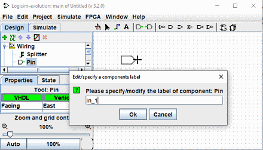

自编号标签
此选项可以放置带有自编号标签的组件，例如 Led_1、Led_2 等。使用方法如下：
在资源管理器窗格中选择一个工具，例如引脚工具，然后将它移动到工作区；在单击放置之前按下 L 键。接着输入以数字结尾的标签名称，例如 “In_1”。

之后再放置同类组件时，Logisim 会自动递增标签编号。启用此选项后，组件放置前的阴影会显示为粉红色。可以同时为不同类型的组件启用此选项。

要停用此功能，按相同方式操作，但改按 A 键。如果已为多种组件类型启用自编号标签，需要分别为每种组件类型停用它。
按键及相关功能：
- L：启用该功能并设置或修改标签
- T：切换标签可见性
- H：隐藏标签
- V：显示标签
- A：结束自编号标签功能
下一节： 以矩阵形式放置组件。